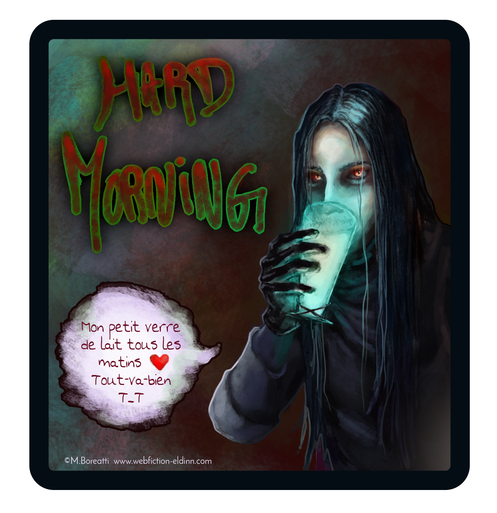
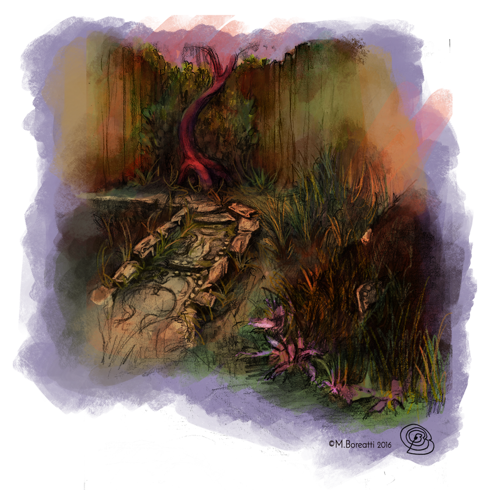
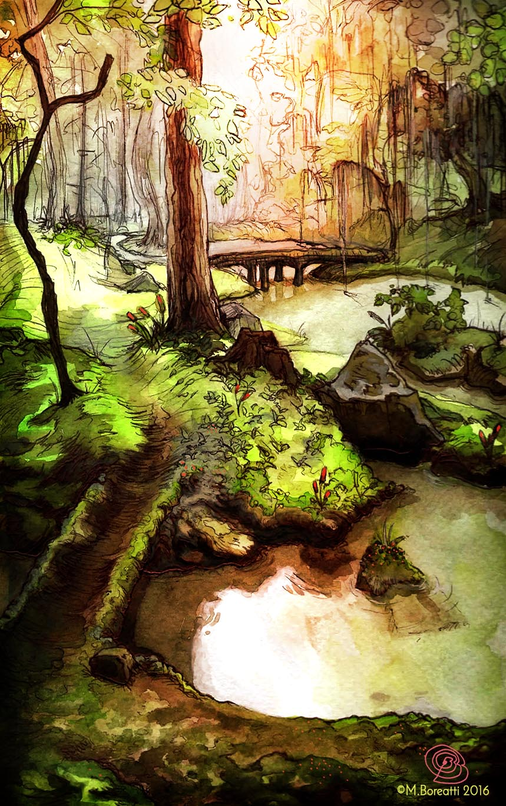
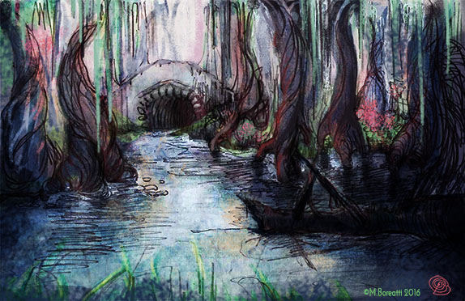

L'Antagonisme - Partie 2

Chapitre 1 : Sur le fil

Chapitre 2 : Sur la blanche

Chapitre 3 : Sur le câble

Chapitre 4 : Sur la ligne
Encyclopédie de l'univers
GitHub du projet
Page Facebook
Profil DeviantArt
Replier le menu
Retour à la vue principale